Organizing Knowledge with Logseq and Obsidian
2024-12-02
Welcome to the PKM Workshop
Today’s Goal
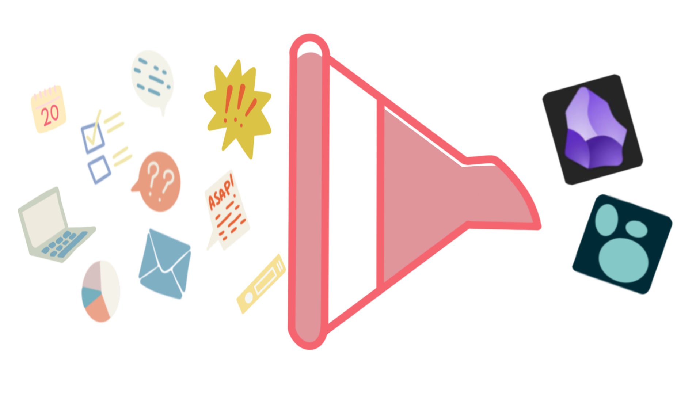
My Journey
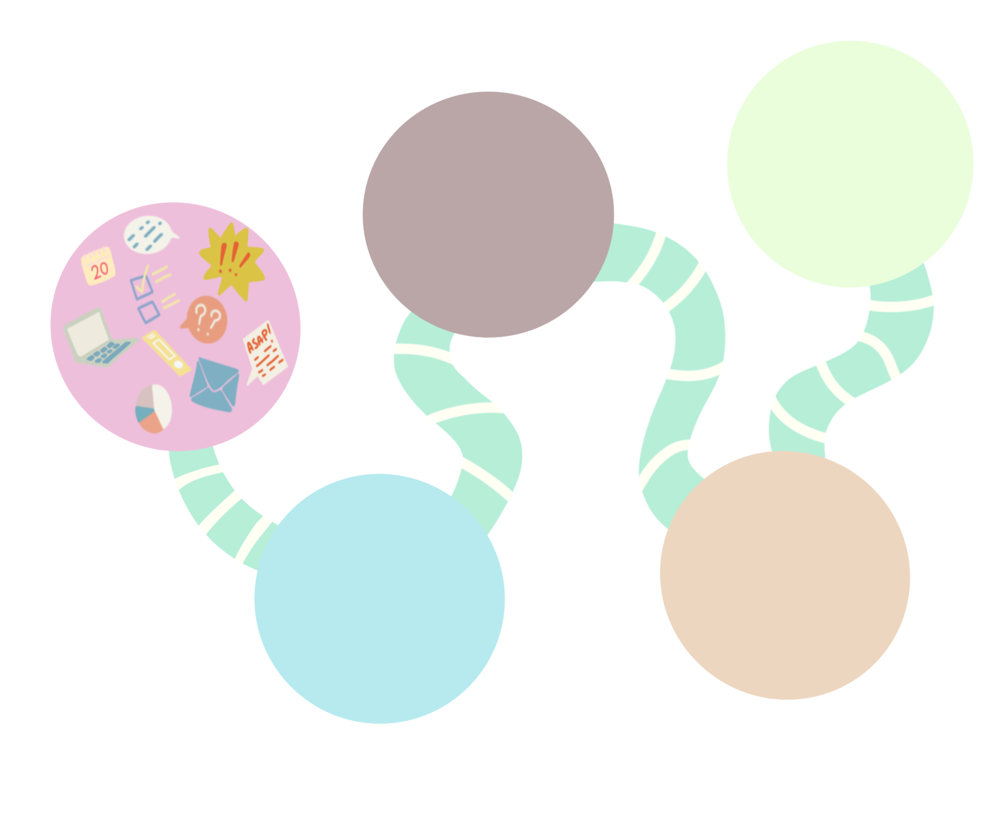
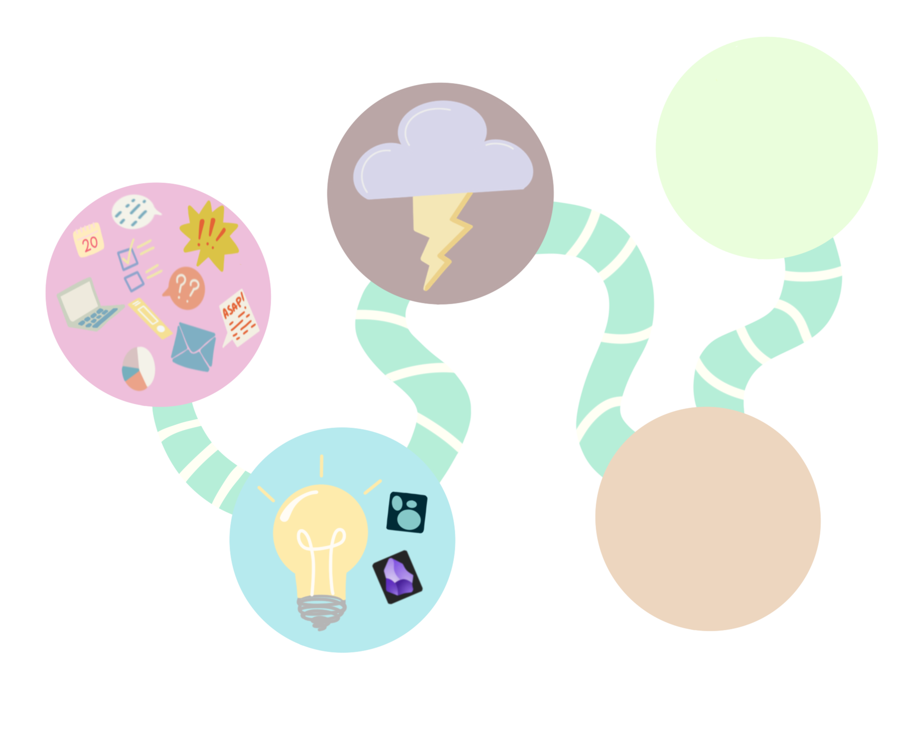 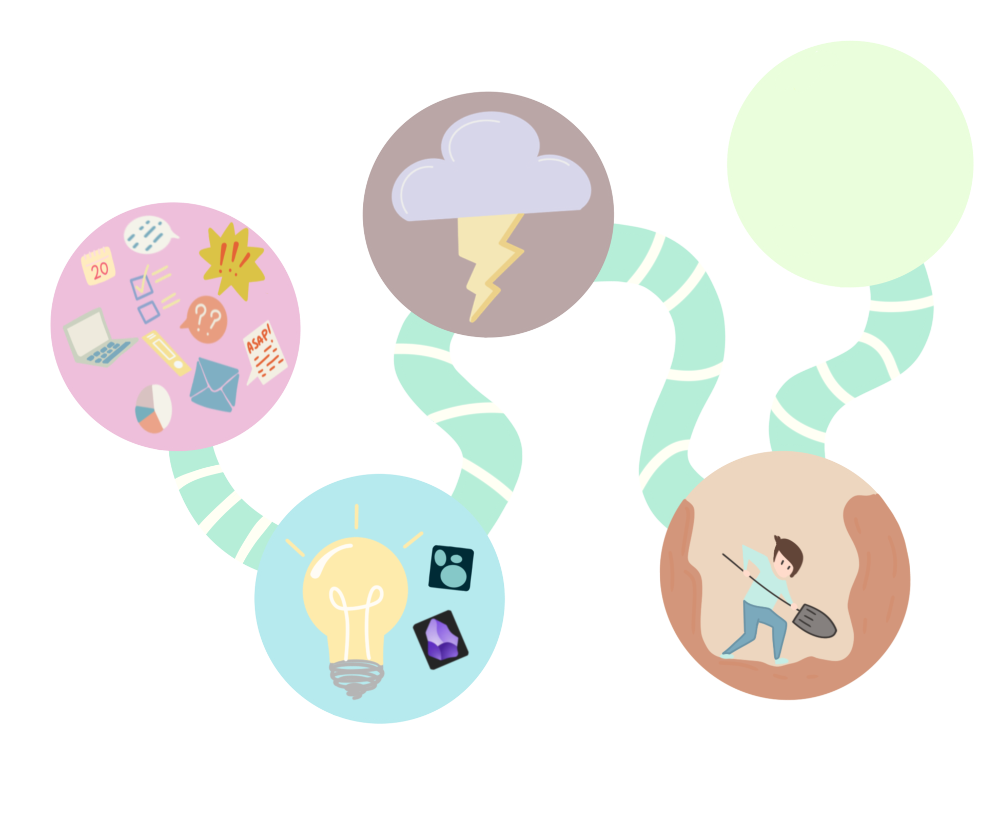 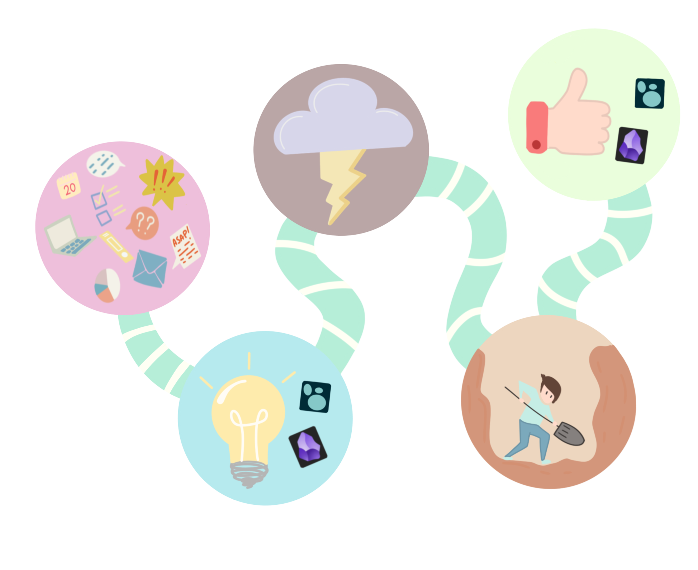
You are the expert
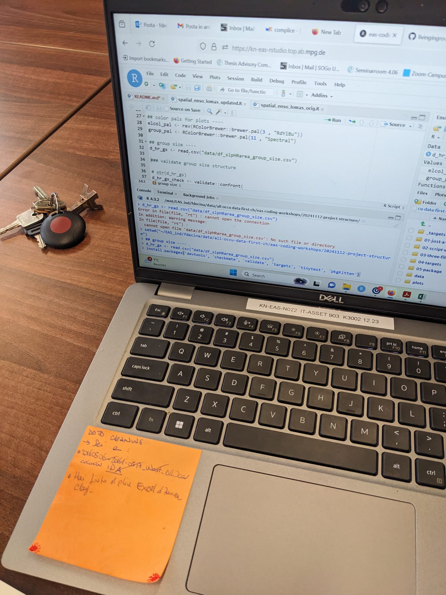
What is PKM
PKM: Personal Knowledge Management
A system for capturing, organizing, and retrieving knowledge efficiently.
PKM helps with:
- Information overload,
- Information retrieval,
- Scattered notes,
- Communication
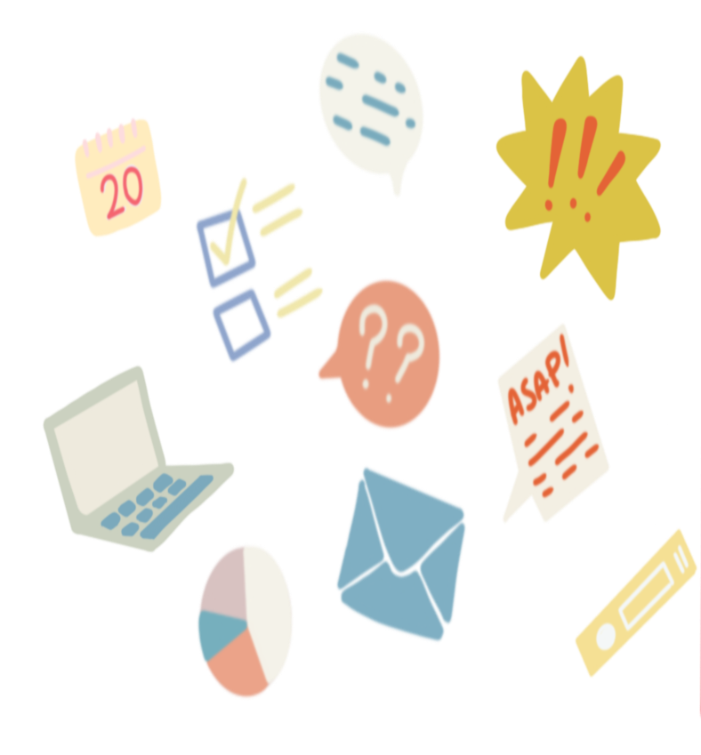
Your Current Workflow
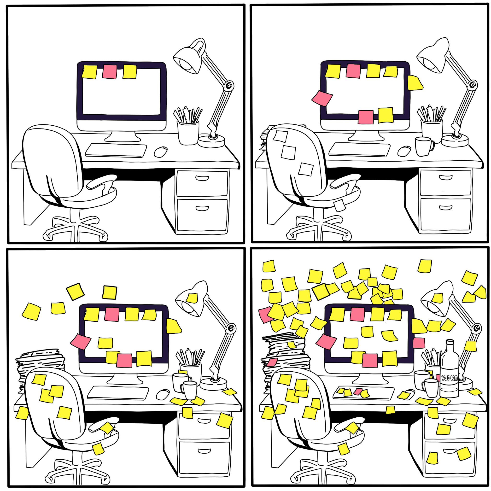
Apps to the Rescue!
Note Taking Apps provide the practical infrastructure for implementing a PKM system
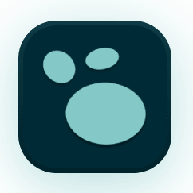 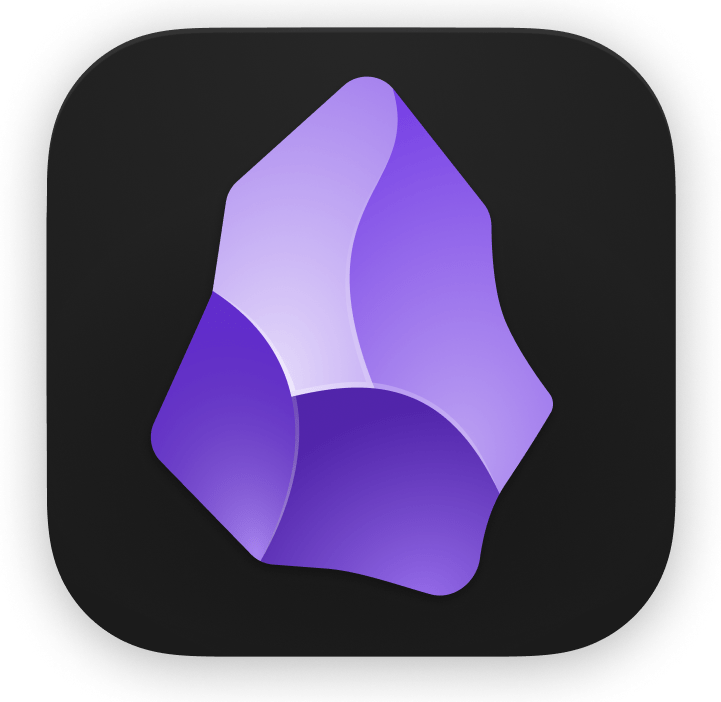
Common Pitfalls
Tools for PKM:
Logseq and Obsidian
Logseq
- Open-source
- Uses Markdown (future-proof)
- Great for journaling and task management
- Helps build structured, hierarchical notes
Obsidian
- Free with optional paid extras
- Uses Markdown (future-proof)
- Great for visualizing connections (Graph View)
- Flexible with many plugins
Tools for PKM:
Why not other apps?
Limitations
PKM Strategies
Common PKM Strategies
Once again…
You are the expert
The key to Personal Knowledge Management (PKM) is organizing your knowledge in a way that ensures you’ll find it when you need it.
A great system isn’t about perfection; it’s about making retrieval easy and reliable.
Once again…
You are the expert
A good system should support your workflow, not distract you from it
Do Not Perfect your PKM structure at the expense of getting things done
PKM Strategies
Zettelkasten
More info here: Zettelkasten
PARA
A system by Tiago Forte for organizing all information.
Projects: represent active, short-term goals
Areas: broader, long-term responsibilities
Resources: library of reference materials
Archives: final place for anything that is no longer active
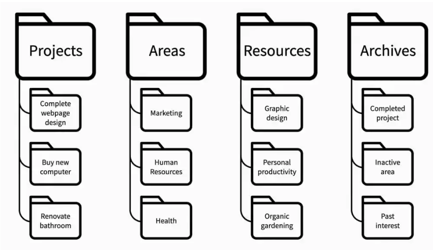
More info here: PARA
Second Brain
A framework by Tiago Forte for managing and retrieving knowledge efficiently.
Capture: refers to efficient note-taking
Organize: note organization is essential to retrieve information
Distil: learn to summarize information
Express: use your notes actively
Best for building a personal repository of ideas and knowledge
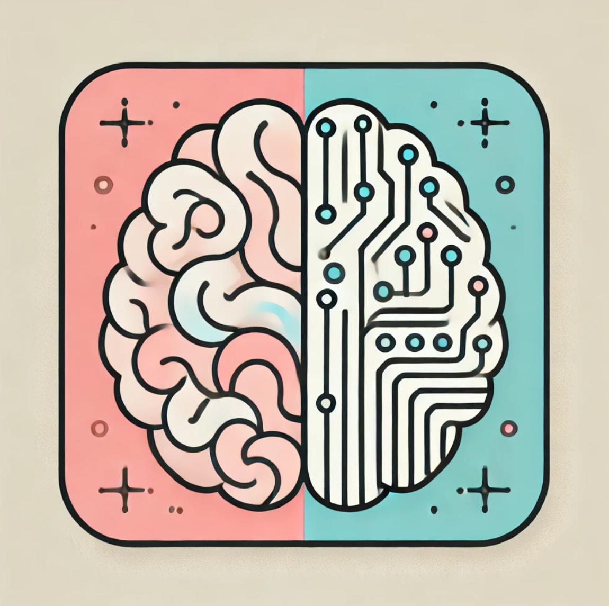
Mind Mapping
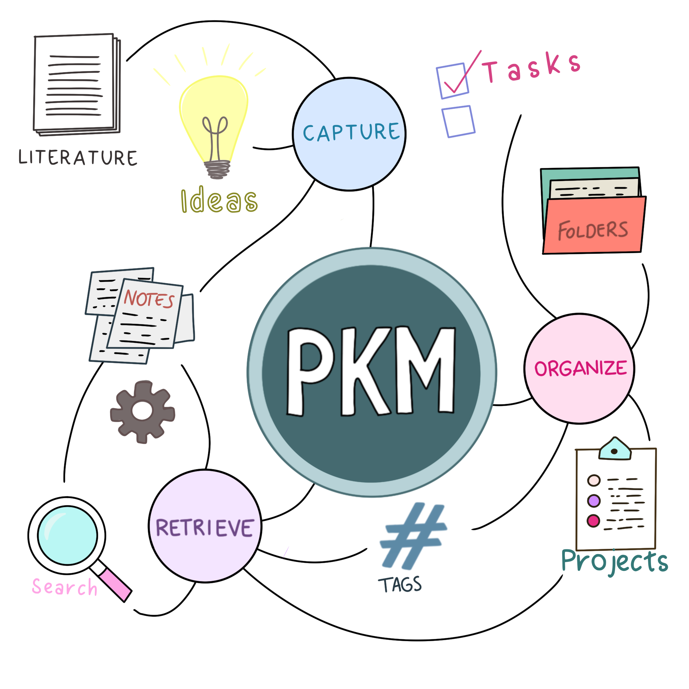
More info here:Mind Mapping
What We Are Doing Now
Explore Obsidian and Logseq:
How these tools work and how they can adapt to your workflow.
Ask Questions Freely:
This session is all about answering your specific questions.
What We’re NOT Covering: How to take notes in general
What is Logseq?
What is Logseq?
It helps you:
- Organize thoughts using blocks
- Connections ideas using backlinks
- Daily Journaling
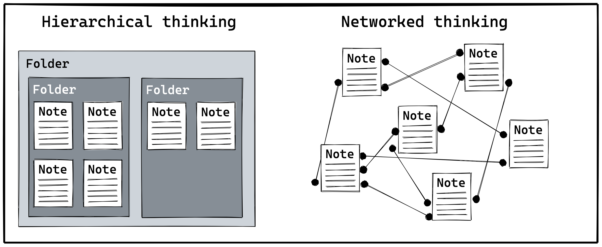
Key Features of Logseq:
Outliner-Based Workflow
[[Link Syntax]]Key Features of Logseq:
Journaling and Daily Notes
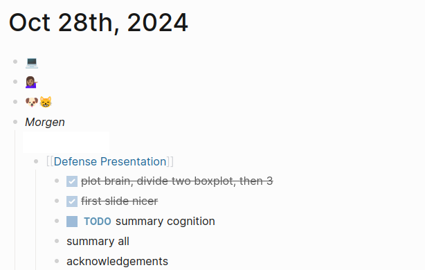
Key Features of Logseq:
Task Management
Key Features of Logseq:
Page Properties
priority:: A deadline:: 2024-12-01Key Features of Logseq:
Queries
Key Features of Logseq:
What Makes Logseq Different?
What is Obsidian?
What Is Obsidian?
Key Features of Obsidian
Bidirectional Linking
Graph View
Markdown-Based: Future-proof .md files.
Local Storage
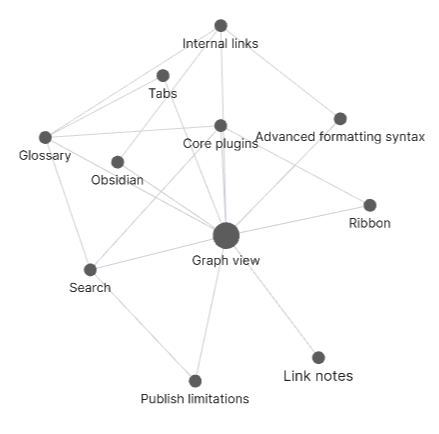
Literature Review:
#methods, #results).Thesis Writing:
status: draft).Obsidian vs. Logseq
Similarities:
Differences:
Logseq:
Journaling and outliner focus.
Built in functions, less plugins available
Obsidian:
Note-based, adaptable for any system.
Extensive plugins for research and writing.
What We Are Doing Today
What We Are Doing Today
Explore the Obsidian Vault and Logseq Graph:
How these tools work and how they can adapt to your workflow.
Ask Questions Freely:
This session is all about answering your specific questions.
What We’re NOT Covering: How to take notes in general - Everyone’s style is different and what works for me might not work for you.
What To Do After Today
What To Do After Today
Designing Your Workflow
Final Thoughts
Cecilia Baldoni, slides built with Quarto